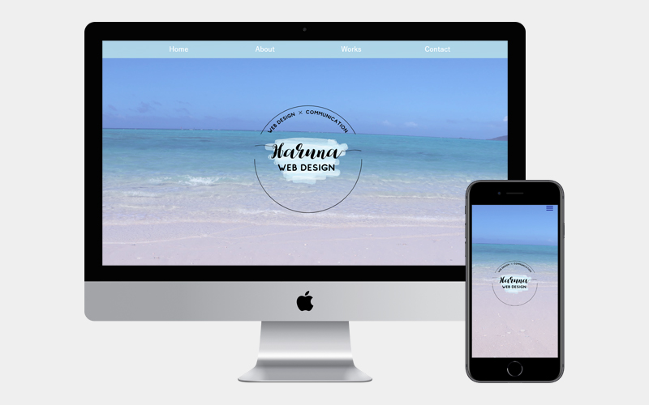

ポートフォリオサイト
- 概要
- 転職活動で自分のことを知ってもらうためにポートフォリオサイトを作成しました。
- コンセプト
- 忙しい採用担当者様に向けて、ストレス無く短時間で見て頂けるポートフォリオサイト。
- サイト制作の目的
- 転職活動にて、採用担当の方に自分自身の性格や現状のスキル、これまで行ってきたものを知ってもらうため。
- ターゲット
- 各社の採用担当者様。
- デザインに関して
- 大好きな海の色であり、バースデーカラーである水色をメインカラーにし、白と水色で自分らしさを表現しました。 また、ロゴも手作りし、「縁と繋がりを大事にしたい」気持ちを込め、円と糸で繋がっているようなフォントで繋がりを表しました。
- 担当範囲
- デザイン、コーディング
- 制作ツール
- Phptpshop、sublime text
- 制作期間
- 随時更新中
- URL
- https://kunren603.site/yamanaka/portfolio/
- 制作工程
- ①参考サイト検索
- ②ワイヤーフレーム作成
- ③コーディング